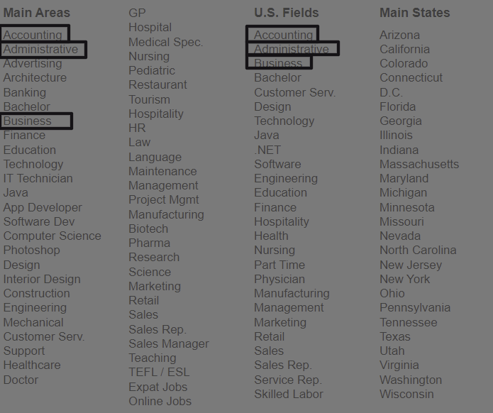
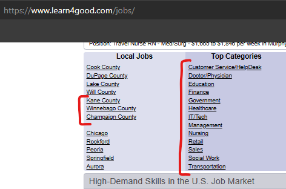
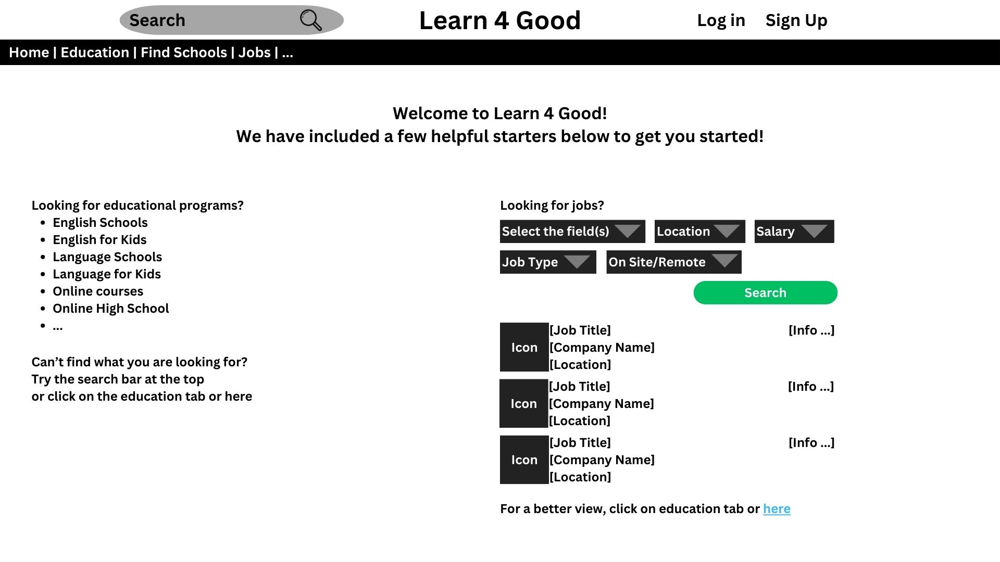

Proposal
Statement of Problem
The website Learn4Good is considered to be a platform used by many students and job-seekers, but it is currently considered to be outdated impacting its usability and overall user experience. We have identified several problems for the site: outdated user interface, challenging navigation, and inefficient job search functionalities, through surveys and collecting feedback from the participants.
Research Method
- Online Survey: We will survey a substantial number of participants(Our classes, Family members, and Friends)
- User Task Observation: Prompt the user to navigate through the site following a specific instruction.
- Response Analysis: Collecting user feedback and analyzing the result to create a proposal aimed at improving the website's functionality and user experience.
Protocol for Usability Audit
Our usability audit was designed with a clear structure and objective, focusing on evaluating the Learn4Good website's user experience.
The following steps outline our approach:
- Initially, we outlined our objectives for the survey, concentrating on key aspects we intended to audit, such as the user interface and navigation of the Learn4Good website.
- We chose our target users to be our classmates, family members, and friends. This diverse group was selected to gain a broad perspective on the website's usability.
- A Google survey was created and then distributed to our selected user groups. This survey included various questions about the users’ experiences, preferences, and challenges faced while using the website. In addition to the survey, we observed some users interacting with the website live. We believed these observations would provide deeper insights into navigational patterns and potential issues users might encounter.
- All the responses were collected, organized, and then exported into a Google Sheet for detailed analysis.
- We then analyzed this collected data to identify common problems and understand user expectations.
- Based on this analysis, we synthesized our findings to outline the primary problems and areas in need of improvement on the Learn4Good website.
Summary of Survey
- Most of our participants were first-time users of the site.
- The majority of users were above 18(only 1 was not)
- The reasons users visit Learn4Good vary from job searches to educational resources
- A couple of issues from the user responses:
- Outdated UI design leads to poor aesthetics and user experience.
- Navigation difficulties, especially in locating specific job categories.
- Inefficient job search filters, lacking options like internship filters.
Improvements
Home page
A major noticeable accessibility issue regarding the informational structure of the multi-purpose Learn4Good website is the cluster list of selections. Along with different interactive objects, all clump into one page which causes an overflow of information from the user’s perspective.
Issues:
- Information overflows (clumped page)
- Massive amount of interactive (potential possibility of misclick)
- Unnecessary repetition of information (Accounting, Business, Administrative,etc)

Fix:
- An accessibility fix toward improving the presentation of the information structure would be through a filtering system that allows for easier ways to locate or search for needed fields either for jobs or education purposes.
- Regarding the categories of the information, while the Learn4Good website did a good job of presenting to the users that this is a multi-purpose website by stuffing everything all in one page, however, the utilization of the navigation bar would be rendered pointless along the constant overflow of information. We suggest separating each purpose by pages and utilizing the navigation bar more effectively for the user to attend to their original purpose of visiting the website without getting confused in the process.
Color representation
A fairly important way of categorizing items through the website is by colors, the Learn4Good website did a constant job of categorizing the purpose of each field. However, there are some mishaps with color selection regarding the buttons.
Issues:
- Accident from color inconsistency (different colors used for search buttons, the same color used for the login and education search button)
Fix:
- A simple fix for Learn4Good, use the correct or dedicated colors when addressing interactive for the user. In the case of the website, changing the search button to orange color as intended. Additionally, change the login button to another color, since that is for user account information.
Navigation and Font size consistency
The navigation bar should be a contestant on the site so users don’t get lost exploring the site. Learn4Good has not done the best in keeping their navigation bar consistent which can lead to some frustrations. This was the same for the sub-navigation lists, they are not in any apparent order.
Issues:
- What seems to be the top-level navigation bar and font size changes for each page which can lead to users getting confused and lost. (clicking on the Jobs tab would change the list of pages in the navigation bar and instead of Jobs being highlighted, Register is highlighted red instead.)
- The sub-navigation on the page is in the form of an unordered list of hyperlinks. (At first, it looks to be in alphabetical order but that's not always the case, sometimes it has no real order)

Fix:
- Make the top-level navigation bar consistent between all pages and have the highlight on the right tab.
- The simplistic and most effective way to fix the sub-navigation is to list it in alphabetical order.
- Using consistent font size for presenting information throughout the website excluding title, main objective, highlight, etc.
Sample Mockup
[a]
[a]Sample mockup (feel free to edit it: https://www.canva.com/design/DAF2L16fa3s/24NWUEyPH3FMMZGqkT1a7A/edit?utm_content=DAF2L16fa3s&utm_campaign=designshare&utm_medium=link2&utm_source=sharebutton)